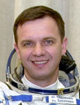

Lyndon B. Johnson Space Center
Houston, Texas 77058
|
National Aeronautics and Space Administration Lyndon B. Johnson Space Center Houston, Texas 77058 |
 |
Biographical Data |
||
Gidzenko Yuri Pavlovic (Colonel, Russian Air Force)
Test Cosmonaut of the Yuri Gagarin Cosmonaut Training Center
PERSONAL DATA: Born March 26, 1962, in the village of Elanets, Nikolaev region, the USSR. Married to Gidzenko, Olga Vladimirovna, born in 1961. They have two sons: Sergei and Alexei.
EDUCATION: Yuri Gidzenko graduated from the Higher Military Pilot School in Kharkov (Ukraine) in 1983 and from the Moscow State University of Geodesy and Mapping in 1994.
AWARDS: Hero of the Russian Federation, Military Meritorious award, 4 service medals, Yu. A. Gagarin Diploma.
EXPERIENCE: Upon graduation from the pilot school in 1983 Yuri Gidzenko served in the Air Force as a pilot and a senior pilot.
December 1987 to June 1989 he attended basic space training as a test cosmonaut candidate. Since September 1989 he attended advanced training as a test cosmonaut candidate.
Gidzenko is an instructor of general parachute training. He has logged a total of 145 parachute jumps.
March to October 1994 he was training for a space flight as a back-up crew commander (17th Primary Expedition/ Euro-Mir-94 Program).
November 1994 to August 1995 he attended training for a space flight aboard the Soyuz TM transport vehicle/Mir orbital complex as the Expedition 20 Primary crew commander (Euro-Mir-95 Program). Yuri Gidzenko served aboard Mir from September 3, 1995 to February 29, 1996, and logged 180 days in space. One of the crewmembers on this mission was ESA astronaut Thomas Reiter.
In October 1996 Gidzenko received his assignment as the ISS 1 crewmember, and started training as the ISS pilot and the Soyuz transport vehicle commander. Yuri Gidzenko performed his 140-day long spaceflight aboard the Soyuz transport vehicle/ISS/Space Shuttle October 31, 2000 to March 21, 2001.
Since August 2001 he trained as the Taxi-3 crew (ISS visiting crew) commander. He performed his 3rd space flight in April 25, 2002 – May 5, 2002 as the Taxi-3 crew commander onboard the Soyuz TM-34 vehicle with Roberto Vittori (ESA flight engineer, Italy) and Marc Shuttleworth (space flight participant, South Africa). Gidzenko logged an additional 9 days and 21 hours in space during this flight.
Since 2003 Gidzenko has been serving as a GCTC Department Chief.
AUGUST 2007
{kind=link}